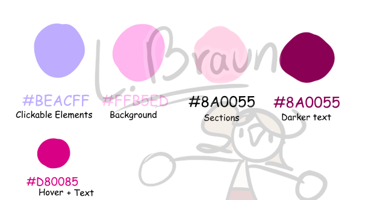

Description:
You orient in the relevant tech, media and design landscape and create
interactive media products that you have tested with users and stakeholders.
Static Conceptualisation
1) Porter Robinson Website Figma Recreation

For one of the workshops we had been asked to pick a site we liked from
Site of the Day at awwwards.com. I had picked
Porter Robinson’s website .
We were then tasked with recreating the website in figma. I chose to recreate
the store page instead,
because the main page was very complex. My final figma
file can be found
here .

Reflection
I feel I could definitely improve the site recreation had I known how to use
figma better.
The interactivity is very limited at the moment and I would love to add more.
With my limited knowledge of figma in mind I am genuinely a little proud of what
I was able to make.
Interactive Conceptualisation
2) Dead Man's Switch
Two years ago I wanted to use a dead man’s switch for a project I was working on,
but I ended up coming to the conclusion that the specific type of way I needed
the dead man’s switch to be didn’t seem to exist on any website or program yet.
So I started making my own.
Idea
A dead man’s switch is a device that requires a regular input to stay in either
an activated or deactivated state. Like a train driver having to press a button
every so often to make sure they’re still awake and conscious or a grenade without
the pin, which will start detonation as soon as the person holding it lets go of
the lever. I wanted a button of the former type, with a customisable timer length.
The user would have to press a button to keep the timer above from reaching zero.
If the timer runs out the player loses.
Old execution of the interactivity
Back then, for my use case, this website (which can be found on my old
replit ),
really only needed to work once, because I would have lost the game after the
timer ran out, so when halfway through development the reset function stopped
working, it wasn’t a priority to fix. It still does not work to this day.
The front-end is very plain and rather unimpressive. The button is essentially
the only interactive thing on there. The social media logos do a little css
animation when they are hovered over. The colours of the background change as
the time goes down, to indicate the growing urgency of pushing the button. Sound effects
also indicate the state of the game.

What I would do differently now
There’s definitely a few things I’d do differently. First of all I’d want to use
my better understanding of JS to improve on a few things, though
functionally it would remain largely the same. I’d want to add a few
additional UI/UX features such as a timer tracking how long you’ve been alive for,
as a way of keeping score, as well as a functioning reset button
(currently the only way to reset is to reload the page).
Additionally, my coach gave me feedback, and suggested adding
more interaction, more moving elements. Such as a progress bar or animations to
improve on the feeling of gamification. He also suggested I improve the visuals
and UI.
Reimagined Version
For my portfolio I made an updated version that you can find here, or on the projects page!

The design of the reimagined version is based off of my first version. The old version
functioned as my prototype design. The original design was simple and minimalist.
It didn't need to be much more and I didn't want it to distract.
It's largely very faithful, though I tweaked some of the colours to make it consistent
with the main page. I linked back to the main website using a button, for easier,
more intuitive navigation back to the main site.
I also updated the css so the site scales better. Additionally, I added a progress
bar that shows visually how much time is left. Using some simple math it calculates
the remaining percentage of time. This adds another layer of feedback into the UI.
Now the colour of the background, the timer element and the progress bar all help
the user to understand how much time is left.
Next, to enhance the feeling of gamification, I added a total score. This score tracks
the total time the player has stayed alive. It automatically stops when you lose, using
the same logic that changes the backgrounds dynamically based on the state of the game,
which was present in the earlier version. I used the knowledge I gained from making
the music player on the Homepage.
After a game over the High-Score gets updated, and using
Bluesky's documentation
I was able to add a share button, that will generate a pre-populated post with the player's
High-Score. It also pings me, so I get to see your awesome High-Scores!
I feel these additions make it feel a lot more like a little game. You can share
your high scores and compare them with your friends' scores.
Lastly I want to add a character that reflects the state of the game. If you lose she'd die.
I have not yet implemented this.
Ultimately I feel I've made the feel of the application a lot more appealing. I have also
added more feedback to the UI.

If you want to read more about this project, consider checking out the following pages!!
LO 2.2 - Dead Man's Switch
3) Portfolio Website

I have made a portfolio website!! (You're looking at it).
It features a bunch of interactive elements with visual and audio feedback. I played around
with animations, sound effects and more.
The site is based off of
a concept I made back in semester 1
, for a rework of my personal website (lukasbraun.nl ),
which has been neglected for many years. According to the homepage I'm still in the first year
of secondary school!! (That was in 2015!!)

Presentation, Theme and Vibe
For this website I really tried to channel the feeling of old personal websites, such as MySpace pages
or old 90s/00s websites, while making it slightly more modern and user-friendly. I tried to
have my hobby, drawing and art, really shine through by hand-drawing a bunch of elements.
I tried to keep the site a little playful, while also inviting and not compromising on usability.
Some portfolio sites can become very boring, sober and sterile, which I don't think fits me as a person.
I wish I could have added even more little hidden details, but I did not have the time.
Fun details I included are things like hovering over the page title, sound effects and little
playfully interactive elements in the
"Hotbar" on the Homepage.
Colour Choice
The main colour palette of the site is shades of pink and purple.
These are my favourite colours. I tried to make the text readable, making sure
the colour is different enough.
The different main pages have a unique banner colour to help distinguish them.
I added css animations to almost all clickable elements, to provide very obvious feedback
to the user as to what's clickable (and also just because I thought they were neat)



Music Player
I made a music player that plays my own custom-made songs, which can be found on the homepage.
When the user clicks the gramophone in the Hotbar, the playlist starts playing.
Once a song is actively playing the gramophone gets little icon added onto it, indicating
the next click will skip the song. When a song finishes on its own the icon disappears and the
user can start the music again by clicking on the gramophone once more. The icons I used
are established icons popularised on TV remotes, skip and play.
Implementation of UX Feedback
I showed the site to classmates in real life, friends from secondary school over discord and my
psychologist while on a Zoom call. People liked the addition of this music player,
though a much requested feature was a way to...
you know... stop the music. I did not initially have this functionality. At that time the only way to
make it stop was reloading the page. This wasn't particularly user-friendly. In
version 1.5.4 - Music Player User Feedback
I added a stop button. Initially I wanted it to only appear when a song was playing, but decided
to have it always visible so users can notice it before playing the song, so they can quickly
turn it off again, without having to find the stop button first. I also made the stop button
highlighted once a song starts playing, to draw attention to it. The sound the button makes
depends on whether it's in the functional state or not.
Known Flaws in the UI
The navbar links are images, but they were the first images functioning as UI buttons I added.
Back then I did this by having an image with a transparent hole get a background through css
upon hover. This worked fine until I wanted to make them move upon hover as well. Now the background
sometimes shows a little when it's moving. I wanted to update these to work like the pagedoll or
logo in the top corner, using css to swap out the background image, but wasn't able to due to time
constraints.
If you want to read more about this project, consider checking out the following pages!!
LO 2.4 - Porfolio Website (Development)